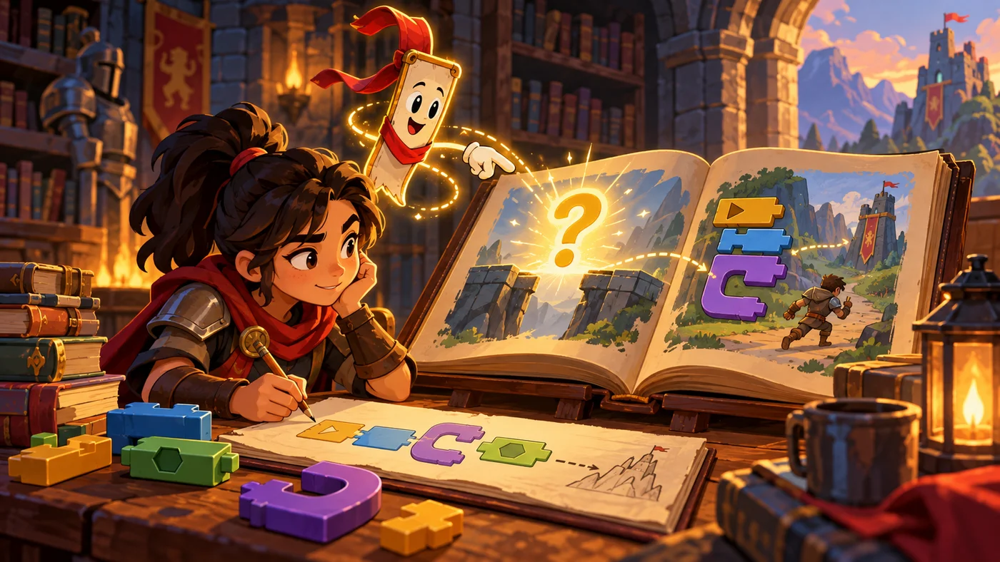
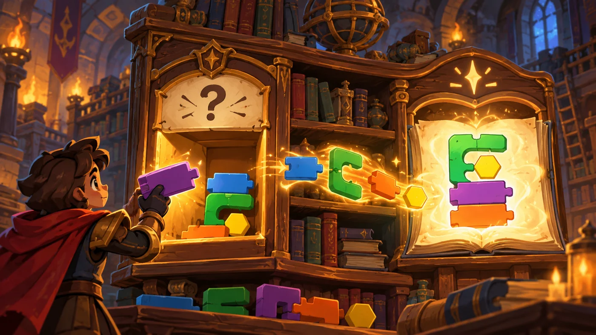

扣哒考级 · GESP 图形化 三级 · 第 1 单元 | 魔法绘本馆 STORYLOOM LIBRARY
会对话的书签 输入与输出
Input and Output

贺舒曼
镜中先知 · 你的向导
推开绘本馆的门，一枚书签从书架上飘下来，停在你面前。
它先开口："你想找哪一本？"
你愣住了——原来程序也会问问题。你说出书名，书签闪了一下： "《星星的旅程》，在第三排。"
它先开口："你想找哪一本？"
你愣住了——原来程序也会问问题。你说出书名，书签闪了一下： "《星星的旅程》，在第三排。"
贺舒曼 · 镜中先知
三级从这里开始，程序第一次能"听见你说话"。只有两组积木要记：输入 = 询问并等待 + 回答； 输出 = 说 / 思考 / 显示。剩下的就是把它们串成"问—算—答"三步。
0 单元导语与目标
Before We Start
0.1 学习目标
- 理解输入和输出：程序怎么"收信息"、怎么"送结果"；
- 会用询问并等待让角色提问，用回答拿到用户输入的内容；
- 会用说 / 思考 / 显示三种方式把结果输出出来；
- 会用连接把几段话拼成一句完整的输出；
- 能设计"先问、再算、后答"的完整交互流程。
0.2 考纲对照
| 考纲知识块 | 考纲要求 | 本单元小节 |
|---|---|---|
| 1 输入与输出 | 计算机程序的输入与输出的概念 | 1.1～1.2 |
| （知识点详述第 1 条） | 了解计算机的输入、输出功能，掌握程序交互设计技巧，能够根据需求分析，选择合适的人机交互方式设计较为丰富的角色间的交互行为 | 2.1～2.3、3.1～3.3、4.1～4.2 |
三级的第一课是"让程序和人说上话"。在这之前，程序只会自己演； 从这一单元起，它会问、会听、会答。
1 什么是输入和输出
Input and Output
1.1 输入：把外面的信息收进来
绘本馆门口挂着一枚会说话的书签。它先开口问："你想看哪一本？" 你回答之后，它才去架子上找。

assets/illustrations/scratch-L3-01-01_talking_bookmark.webp
【配图位】一枚会说话的书签浮在绘本旁，书页上浮现出发光的问句，读者在下方写下答案。（提示词见《GESP配图清单与AI绘图提示词》第四节 3-1）
图 2（SVG）：输入的两种来源
打个比方：输入就像老师提问后你举手回答——程序先问一句，你的回答就顺着这条通道进了程序。
没有输入，程序永远只能按你写死的内容演，问不了也答不了。
没有输入，程序永远只能按你写死的内容演，问不了也答不了。
1.2 输出：把结果送出去

assets/illustrations/scratch-L3-01-02_io_bookshelf.webp
【配图位】书架上有两个出口——一个"提问口"向读者索取信息，一个"展示口"把结果投射到发光书页上。（提示词见《GESP配图清单与AI绘图提示词》第四节 3-1）
图 4（SVG）：输入与输出
2 让角色开口提问
Asking Questions
2.1 询问并等待
在侦测分类里有这么一块积木：询问（问题）并等待。 执行到它时，程序会停下来，等你在舞台下方的输入框里打完字、按下回车。
重点示例：先问一句
图形化积木
读法 "询问并等待"会停在原地等用户回答，回答完才继续往下走
为什么叫"并等待"？因为图形化编程是一步一步往下走的。如果不等，程序问完就立刻跑下一块了，用户还没输入完。
"并等待"就是告诉程序：在这儿等着，别急。
"并等待"就是告诉程序：在这儿等着，别急。
2.2 回答：用户刚说的话
重点示例：把回答拿出来用
图形化积木
要点 "回答"是一块椭圆形的值积木，里面装的就是用户刚刚输入的那句话；它可以塞进任何要填内容的地方
2.3 拿回答去做事
重点示例：根据回答做不同的事
图形化积木
要点 "回答"是六边形条件也能用的——把它跟"是"比一比，就做出了"看回答再决定"的效果
打个比方："回答"就是一个临时的小盒子，每次询问之后，盒子里的东西就会被换成最新的那一句。
所以要"问了马上用"，问完之后再问一次，前面的内容就被覆盖掉了。
所以要"问了马上用"，问完之后再问一次，前面的内容就被覆盖掉了。
3 输出的三种方式
Three Ways to Output
3.1 说与思考
重点示例：两块最常用的输出积木
图形化积木
要点 "说"冒出白色气泡、"思考"冒出思想气泡，参数填 2 表示"挂 2 秒后消失"；不填秒数就一直挂着
3.2 显示在舞台上
重点示例：把结果直接显示出来
图形化积木
要点 变量（还有列表）在舞台上会以左上角的小面板显示，适合"随时能看到现在是多少"的输出
3.3 把几段话拼起来
重点示例：连接积木
图形化积木
要点 "连接"能把文字和值拼成一句话，参数槽里可以塞"回答"、变量、数字——最后输出一句完整的问候语
一个常见需求：想输出"你好，小明！"这种带名字的话，就得用"连接"把固定文字和"回答"拼起来——这正是交互程序最常用的一招。
4 一问一答的完整流程
A Complete Interactive Flow
4.1 先问、再算、后答
图 5（SVG）：交互程序的三步骨架
4.2 把回答变成数字
重点示例：回答本身就是文字吗？
图形化积木
要点 在图形化编程里，输入框里的数字可以直接参与计算；把它存进变量，就能反复使用
为什么要先存进变量？因为"回答"会被下一次询问覆盖。要反复用同一个输入，就先把它存进变量。
图 6（SVG）：输入输出的四块积木
5 代码实战
Level Practice
这一关要在路上一边判断一边行动：看到什么就做什么，' '这正是"程序根据情况做出反应"的雏形。
关卡
非与或
进入关卡 →
故事：
绘本馆的走廊上依次摆着几只箱子，每只箱子上都写着条件——
有的要你在场、有的要你没被看见。你得看清条件再动手，
硬闯是过不去的。

assets/stages/py-L3-01-stage1_not_and_or.webp
【关卡截图位】请把《非与或》的游戏画面截图放到此处（放入 assets/stages/ 目录，文件名为 py-L3-01-stage1_not_and_or.webp）。
思路：每一步都是"先判断、再执行"：条件成立就取，不成立就跳过。 把判断放进循环里，就能一路走一路看。
重点示例：一路前进，一路判断
图形化积木
读法 每一轮先看条件，成立就取、不成立就跳过，最后统一往前走一步
自己试一试：把"询问并等待"放在循环外面和里面各试一次：放外面只问一次，回答一直不变；放里面每走一步问一次。体会一下两种设计的差别。
这一关把两件东西合在了一起：' 判断负责"这一格要不要做"，循环负责"走到位"。
和本单元的关系：真实作品里，"条件"往往不是写死的，而是来自用户的输入——问一句、拿到回答、再按回答决定怎么做，这就是交互。
去扣哒世界闯这一关 →
6 常见陷阱
Common Traps
陷阱 1：只写"询问"不写"并等待"。程序问完立刻跑下一块，用户还没输入，用的是上一次的答案。
正确做法：提问一律用"询问并等待"。
正确做法：提问一律用"询问并等待"。
陷阱 2：忘了把"回答"用掉就去问第二个问题。"回答"会被新的一次询问覆盖，之前的内容就丢了。
正确做法：一问完就马上存进变量或立刻使用。
正确做法：一问完就马上存进变量或立刻使用。
陷阱 3：把"回答"当成数字直接减。"回答"里可能混进空格或汉字，直接参与运算会出问题。
正确做法：先把回答存进变量，再对变量做运算；题目要求输入数字时就提示清楚"请输入一个整数"。
正确做法：先把回答存进变量，再对变量做运算；题目要求输入数字时就提示清楚"请输入一个整数"。
陷阱 4：输出只有"说"，没有"显示"。结果一闪就没了，用户根本看不清。
正确做法：想长期展示就用显示变量；只播报一次就用"说……2 秒"。
正确做法：想长期展示就用显示变量；只播报一次就用"说……2 秒"。
7 题目练习
Practice
前 1 题改编自 2026 年 6 月 · 图形化编程 三级 第 1 题，其余为原创练习题。
改编自 2026 年 6 月 · 图形化编程 三 级 · 第 1 题单选题
智能温室里有一种"湿度小侦探"，它能随时感受土壤干不干，然后立刻把消息告诉中央电脑；电脑收到消息后，再决定要不要打开水龙头浇水。
这个"湿度小侦探"的作用，相当于计算机系统中的哪个部件（ ）。
这个"湿度小侦探"的作用，相当于计算机系统中的哪个部件（ ）。
A.处理器——像大脑，负责思考和计算
B.存储器——像笔记本，负责记住信息
C.输入设备——像耳朵和眼睛，负责接收外界信息
D.输出设备——像嘴巴和手，负责把结果说出来或做出来
B.存储器——像笔记本，负责记住信息
C.输入设备——像耳朵和眼睛，负责接收外界信息
D.输出设备——像嘴巴和手，负责把结果说出来或做出来
查看答案与详解
答案：C。湿度传感器只做一件事：把"土壤干不干"这个外界信息收进来，所以它是输入设备。
A 错：决定要不要浇水的是中央电脑，那才是处理器；
B 错：传感器不负责记住信息；
D 错：打开水龙头才是"把结果做出来"，属于输出。
和本单元的关系："收进来"就是输入、"送出去"就是输出——传感器的角色相当于程序里的"询问并等待"，水龙头相当于"说"与"显示"。
对应小节1.1、1.2 输入与输出。
A 错：决定要不要浇水的是中央电脑，那才是处理器；
B 错：传感器不负责记住信息；
D 错：打开水龙头才是"把结果做出来"，属于输出。
和本单元的关系："收进来"就是输入、"送出去"就是输出——传感器的角色相当于程序里的"询问并等待"，水龙头相当于"说"与"显示"。
对应小节1.1、1.2 输入与输出。
原创练习题单选题
绘本馆的书签要向读者提一个问题，并把读者的回答记下来。下面哪块积木既能提问、又能拿到回答（ ）。
A.说"你好" 2 秒
B.询问"你叫什么名字？" 并等待
C.思考"让我想想" 2 秒
D.显示变量"回答"
B.询问"你叫什么名字？" 并等待
C.思考"让我想想" 2 秒
D.显示变量"回答"
查看答案与详解
答案：B。"询问……并等待"既负责提出问题，又会停下等用户输入，输入完的内容就放在"回答"里。
A、C 错："说"和"思考"都是输出，只能把内容送出去，收不回任何信息；
D 错："显示变量"也只是把已有的值展示出来，不会向用户提问。
对应小节2.1 询问并等待。
A、C 错："说"和"思考"都是输出，只能把内容送出去，收不回任何信息；
D 错："显示变量"也只是把已有的值展示出来，不会向用户提问。
对应小节2.1 询问并等待。
原创练习题多选题
下面哪些属于"输出"（ ）。
A.让角色说"你好，小明！"
B.让角色思考"让我算算"
C.把分数变量显示在舞台左上角
D.用"询问并等待"问用户的名字
B.让角色思考"让我算算"
C.把分数变量显示在舞台左上角
D.用"询问并等待"问用户的名字
查看答案与详解
答案：A、B、C。三条都是"程序把信息送给人"，只不过出口分别是气泡、思想气泡和舞台面板。
D 错：那是输入——信息从人流向程序。
对应小节1.1、1.2 输入与输出。
D 错：那是输入——信息从人流向程序。
对应小节1.1、1.2 输入与输出。
原创练习题单选题
用户先回答了"小明"，程序想让角色说出"你好，小明！"。下面哪种做法能拼出这句话（ ）。
A.直接说"你好，小明！"
B.用"连接"把"你好，"和"回答"拼起来，再交给"说"
C.把"回答"显示在舞台上
D.再询问一次"你叫什么名字？"
B.用"连接"把"你好，"和"回答"拼起来，再交给"说"
C.把"回答"显示在舞台上
D.再询问一次"你叫什么名字？"
查看答案与详解
答案：B。固定文字 + 用户输入 = 一句话，这正是"连接"积木的用途。
A 错：那样名字是写死的，用户输入什么都没用；
C 错：显示变量只是把值摆出来，没有拼成一句问候；
D 错：再问一次只会得到新的回答，还是拼不出话。
对应小节3.3 把几段话拼起来。
A 错：那样名字是写死的，用户输入什么都没用；
C 错：显示变量只是把值摆出来，没有拼成一句问候；
D 错：再问一次只会得到新的回答，还是拼不出话。
对应小节3.3 把几段话拼起来。
原创练习题单选题
一段脚本连续做了两次"询问并等待"：先问名字，再问年龄。问完年龄之后，积木"回答"里装的是（ ）。
A.名字
B.年龄
C.两个都有
D.空
B.年龄
C.两个都有
D.空
查看答案与详解
答案：B。"回答"就像一个临时盒子，每次询问都会把盒子里的东西换成最新的那一句。
想同时留下两个输入，就必须在第一次问完之后先把它存进变量。
对应小节2.2、2.3 回答的特点。
想同时留下两个输入，就必须在第一次问完之后先把它存进变量。
对应小节2.2、2.3 回答的特点。
原创练习题判断题
在图形化编程中，"询问并等待"的执行过程是：显示问题后程序会暂停，直到用户输入内容并确认后，才继续执行下面的积木。（ ）
查看答案与详解
答案：正确（√）。"并等待"三个字说的就是这件事：先停下，等用户输入完再往下走。
如果没有这个等待，程序会在用户还没动手时就跑到下一块，拿到的是空的或者上一次的回答。
对应小节2.1 询问并等待。
如果没有这个等待，程序会在用户还没动手时就跑到下一块，拿到的是空的或者上一次的回答。
对应小节2.1 询问并等待。
8 本单元小结
Unit Summary
贺舒曼 · 镜中先知
从这一单元起，程序开始会"说话"了。记住两对概念：
输入是询问并等待 + 回答，输出是说 / 思考 / 显示。再记住一句话："回答"会被下一次询问覆盖，要用就先存进变量。
你在书签旁学到了什么
- 输入：询问……并等待 + 回答（信息从人流向程序）；
- 输出：说、思考、显示变量（信息从程序流向人）；
- 连接：把固定文字和值拼成一句话，做个性化问候；
- 三步骨架：询问 → 处理 → 输出；
- 要反复用输入，就先存进变量。
下一站：文字魔法
拿到用户输入的那句话之后，还能对它做很多事：数一数有几个字、找出某个字在第几位、 把某几个字换掉。下一单元我们就在文字上施魔法。